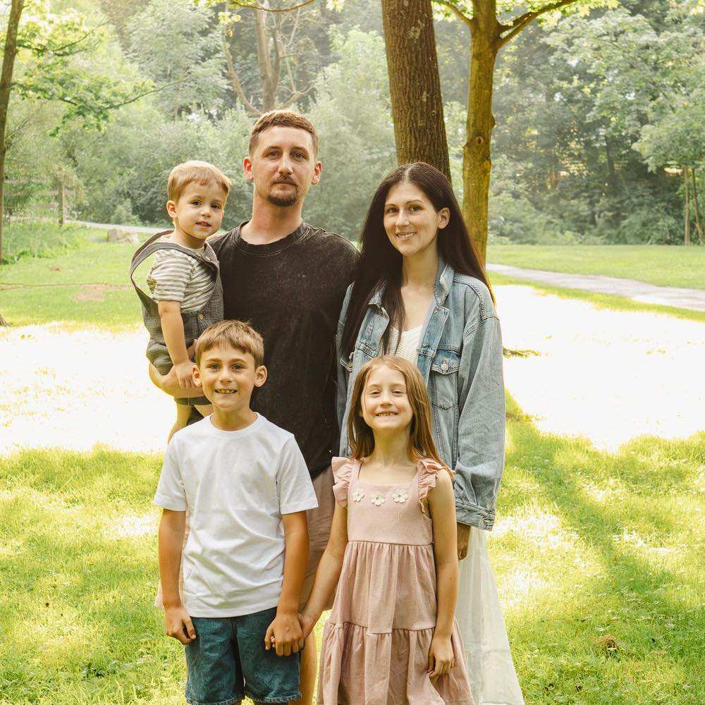

Hey, I'm Kayla.
I help learners understand complex ideas without the cognitive friction. My work sits at the intersection of instructional design, curriculum theory, and writing. I hold a BA in Interdisciplinary English and Communications and am currently completing an MEd in Instructional Design and Technology at Mount St. Mary's University.
Whether I am building a faculty onboarding handbook, designing an eLearning module in Articulate Rise, or writing an essay on Gothic literature, I bring the same standard to the page: clear thinking, purposeful structure, and prose that earns its keep. I believe that good design, much like good writing, makes the invisible visible.
When I'm not designing learning experiences, you'll likely find me reading, raising my family, or collecting marginalia from old books.
Download CV

Family · What grounds the work
"The best learning materials are also, in some quiet way, acts of literature."
— Kayla Canfield
Expertise
My Background
education · tools · approach
Education
- BA in Interdisciplinary English & Communications
- MEd in Instructional Design & Technology (in progress)
- Mount St. Mary's University
Tools & Platforms
- Articulate Rise & Storyline 360
- Adobe Creative Suite
- LMS platforms (Canvas, Moodle)
- WordPress & content management
Core Skills
- Instructional Design & Curriculum Development
- eLearning Development
- Academic Writing & Literary Analysis
- Content Strategy & Visual Communication
What I Bring
- A literary sensibility applied to instructional problems
- Fluency in qualitative research and visual design
- Experience with adult learners in higher education
Accessibility & Equity
- Universal Design for Learning (UDL)
- WCAG 2.1 accessibility standards
- Inclusive curriculum design
Writing & Research
- Literary criticism & close reading
- Academic research methodology
- Content writing & editing
Interests & Influences
- Gothic and Victorian literature
- Collective memory and archival theory
- Feminist pedagogy and critical theory
- The history of the book and reading practices
- Visual rhetoric and design thinking
Currently Reading
- Donna Haraway · Staying with the Trouble
- bell hooks · Teaching to Transgress
- Roland Barthes · Camera Lucida
- Elizabeth McMahon · Literature and the Writing Process